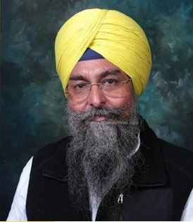

Shri.Kultar Singh Sandhawan Speaker of Punjab Legislative Assembly |
Shri Kultar Singh Sandhwan was born on 16 April 1975 in Kot Kapura, Faridkot, Punjab, India is a well-known politician, Member of the Punjab Legislative Assembly, Punjab Assembly Speaker, and media face from Kot Kapura, Faridkot, Punjab, India. He is famously known for winning the elections of the Punjab Legislative Assembly with a major difference. He is a candidate for the Aam Aadmi Party.
He served the people of his region for the last 5-7 years and is also working hard to serve his life in the welfare of the public. He also shared that in 1993, he enrolled himself in Guru Nanak Dev Engineering College, Bidar, and obtained a bachelors degree in 1997.He is our Proud Alumnus of Guru Nanak Dev Engineering College Bidar.
|